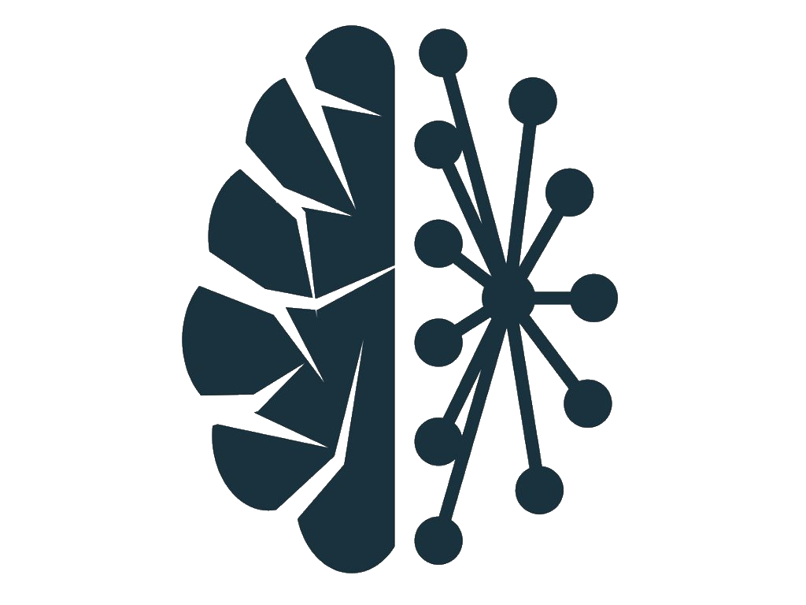

Versatility
Most versatile instrument
A piano can create the most haunting, sad music imaginable, but equally has been responsible for some of the happiest and jauntiest ever made.
Neuroplasticity
Brain Booster
Greatly improves the ability of the brain to form and reorganize synaptic connections.
